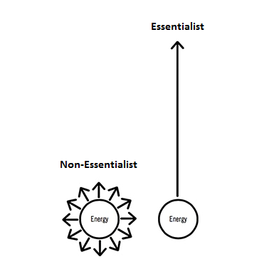

2023-08-12
Here I am, editing a vlog at 6:30 am in my room. My roommate is asleep. The sun is down. It is pitch black outside. In the video, I am talking about how I am going to be poor when I go to Queenstown. I am in Queenstown now. It hits me. This is a limiting belief. I am sabotaging my growth because I do not believe that I will be rich until I finish college.
I think back to yesterday, I was sitting in class. Everyone left for home. Even my teachers had left. I’d recently purchased Adonis School. There I was, sitting and taking notes from Hamza’s “$1K Online In 30 Days (and Beyond)” course’s Mindset module.
He said, “Your beliefs and traits are your limits. You have the skill to upload, to write, but you are not doing it.
Clearly, my traits are not my current constraint. I am waking up early. I am waiting back after school. It has to be my belief.
That’s it. A belief shattered. I can get rich. Watch me get rich. Watch me amass wealth and leverage it to fulfill my dreams.
This is from one module from one course in Adonis School. Here is what I learned from the entire Mindset module of the “$1K Online In 30 Days (and Beyond)” course.
Ask yourself, “What is slowing me down in my pursuit?”
For me, this would be:
What is slowing me down in MTB? School - it takes most of my day. My Lodge’s breakfast timings. I miss more time to ride because my lodge serves breakfast after sunrise. If I could have food before sunrise, I would get more time to ride before school. I could just get yogurt and leave?
This transitions to my second constraint - a lack of time. I could ‘cheat code’ this by spending money on MTB coaching and increasing the return on my current time spent practicing, however, this would need money. Therefore, I have started this endeavor.
What is slowing me down on YouTube? With YouTube, I don’t know how to edit to craft a story better. I edit, and then I do not know what to do. But this constraint is slowly coming off, as I read ‘Storyworthy’ by Matthew Dicks and as I learn about the story, emotion, and rhythm triangle to make cuts. I also stumbled upon a YouTube coach from the Synthesizers community.
Who is the Jeffrey in your life? What is the one thing slowing you down, just like how almost always, it is one factor that slows down the pack from moving faster?
Who is the Jeffrey, slowing down the whole pack because we cannot split up and go past him?
If you send messages, check emails, or have food before you get to work, you lose brain points that you could have otherwise spent on pursuing your dreams.
What are brain points? It is brainpower quantified. This is subjective and estimated, not hard science.
This would mean: doing THE THING first thing in the morning - for me - sleeping at 8 pm and waking up at 4 am, and that is 3 hours of deep work - that would be editing.
Save your brain points for the things that matter. Save your brain points for your dreams.
For me, I should check my phone only after 7:30 am. For this, I would probably have to get an alarm or just toss the phone on my bed, out of sight, after switching off the alarm. I will try the latter out.
Ask yourself, “Where are your brain points going?”

Draw the essentialism graph for yourself. How many arrows and to what do you have? Don’t stop making arrows in 30 minutes. Keep asking yourself this with brutal honesty for a week straight, and then eliminate everything until you have a maximum of four.
Where do your thoughts go, on which topic?
What will you sacrifice for your dreams? Fitness - I am already doing this. Carbs make you stupid because they take a lot of energy to process. This is good for bulking but not for work. My carbs are delayed for dinner and lunch. I am sacrificing muscle for better work.
Hamza eats one meal a day carnivore style - goat cheese, 2 to 3 steaks, 8 to 10 eggs, and butter.
Use Google Calendar. Plan tomorrow today. Absolute key. Have a timetable for the next day and a rough long-term routine, a long-term outline of what your days look like. That is, wake up and sleep at X time, eat X things at X time, and wear X things every day.
Turn your notifications off for everything. Personally, I still have them on for my personal email. My email has been cleaned up to only notify me of important things like my visas, etc.
Ensure your phone does not automatically turn on when you pick it up. I had already done this.
Switch your phone to grayscale as well. This may not seem like much at first, but after 7 days, if you switch back to color, you will realize how they use color to entice you to spend more time on your phone.
Hamza says to put your phone on “Do Not Disturb,” but I have not done that because, in New Zealand, I have only 4 contacts. So when someone calls, it is urgent (and this has not happened yet).
While working, put your phone out of sight and never check it. Hamza puts it under his bedsheet. I put my phone in a cupboard as well.
Do not check your phone, even if it is a 10-second text. Task-switching penalty will slow you down for the next 25 minutes.
Right now, do not bulk. This goes back to carbs and training. Do not train hard. Do more cardio and HIIT. Hard resistance training will affect your Central Nervous System for the day and result in brain fog.
Hamza says the current META (Most Effective Tactic Available) may be to increase income and then get the perfect trainer, chef, and supplements to almost cheat code your fitness journey.
And if you are going to a gym, you will have fake desires, mimetic desires, and desires that are not your true desires, and following them will not lead to the achievement of your true and ultimate goals. I made this mistake. I switched to bodybuilding-style training for 2 months, when in reality, it did not help me become a faster mountain biker but just made me feel better about myself.
Exercise every day. That is Zone 2 cardio for around 30 minutes a day. Zone 2 cardio is when you are walking and can still talk to your friends. Think of an easy hike.
Meditation. Sit for 5 minutes and think about nothing.
Sleep for 8 hours a day in a cold, dark room, and don’t watch screens for 2 hours before bed.
Low carbs, high protein, high fat. No sugar, no processed foods. Eat clean.
(Optional) Get a Whoop/Oura and track HRV. The better your HRV, the more brain points you have. 45 is a bad day for Hamza, and 70 is a good day.
Carbs and weightlifting decrease HRV.
Do the thing that matters: the hard, game-changing, high-leverage deep work task, first thing in the day.
High leverage means whatever generates the most output, whatever generates the most of the outcome you desire.
For me, this is video editing, and then riding before school. Currently, I edit at 5 am, but I am in the process of changing this to sleeping at 8 pm and waking up at 4 am. This means breakfast at 6:45 am, leaving at 7:30 am, and riding for an hour before school.
My Frog tasks are to edit and ride. School is a frog task only on the weekends. I usually do schoolwork after school.
“Days are made of mornings. Life is made of days. Master mornings, master life.” - Hamza Ahmed
You do this by using Alex Hormozi’s two biggest productivity tactics: Wake up early. Work straight after waking up.
Hamza does two 3-hour deep work tasks a day. That is 6 hours a day. The first one is at 5 am and the second one is at 8:45 am. He does self-improvement habits in the middle. Then reduce noise in the later half of the day, so you wake up the next day with more brain points.
“Eat the frog” will result in volume. This is what matters most. Eating the frog every day conquers your days.
Limit the information you take in. Too much processing. Too much intake. Too much information is influencing you. Then you don’t know where to go because everyone contradicts each other. Just choose one thing and do it. Let the compounding skyrocket you.
If you only get Adonis as input, you will win. If you allow Tate Shorts and other YouTube videos as input, you will lose.
Just listen to the winners. For me, this is Alex Hormozi and Adonis School/Hamza. And for MTB - I just practice/ride with people faster than me and literally follow; I ride behind them and learn from how they ride.
Only take advice from people who have dreams bigger than yours and have achieved what you want.
Maximize the learning from one big source. Listen to 1 person and squeeze the knowledge out of them. Just like a relationship - grow with one high-quality partner or keep engaging with multiple partners to find the best, and end up alone and degenerate.
This is the Alex Hormozi story of ‘how easy it would be if you closed all your other businesses and focused on this one?’ “A piece of cake.” “Then do that.”
Choose a business and keep climbing. Long-term, exponential. Let it compound. Let yourself get better and enjoy the fruits of volume.
Less input is like having blinders on, you can’t even see the shiny objects and the girls in red dresses.
For me, don’t let your videos be MrBeastified - tell your story at your own pace, unfiltered and all. Be the authentic you.
Summarized: Just start. Shut the fuck up and do it. Volume.
You are the fat man at the gym but in the realm of business. Start. Alex Hormozi’s Rule 100. Shut down your brain, do 100 minutes of work, and then open your eyes. Stop coping.
You will do volume, have questions, AND get them answered. Then you’ll ask better questions. Repeat.